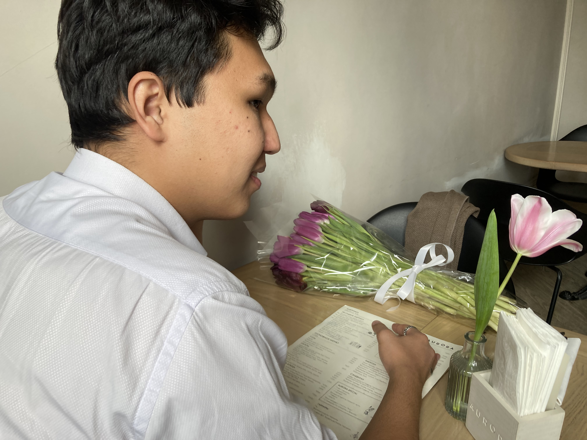
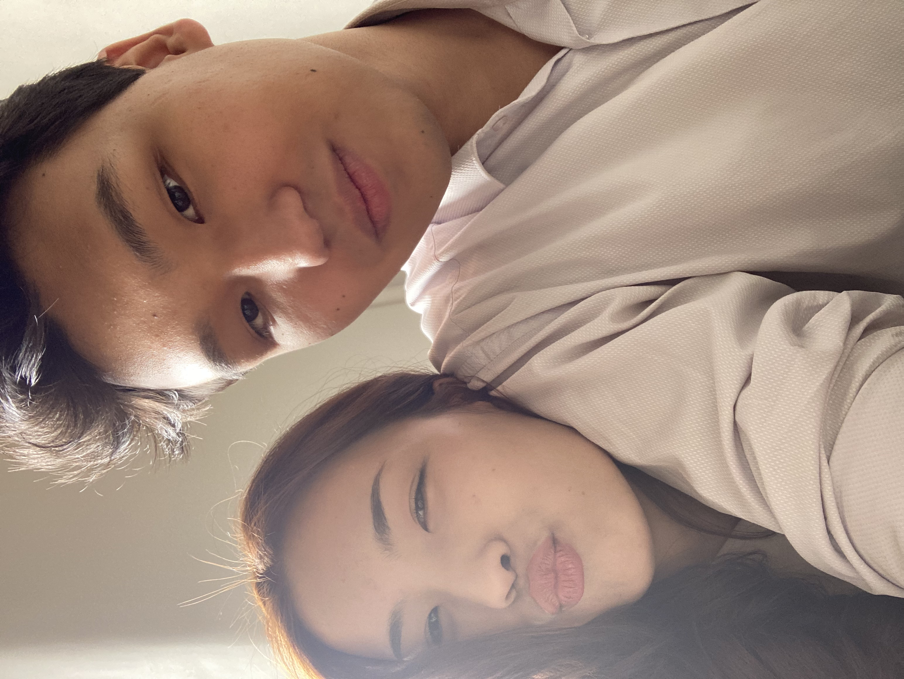

8 марта
Мой очередной сказочный день! Ожидала ли я подарок, который сделает меня в этот день самой счастливой девушкой в мире? Почему-то нет, ведь я в то время все еще считала, что подарки нужно заслужить, а в моем понимании я не могла заслужить подобное, соответственно, подарка не ожидала. Однако мой прекрасный мужчина сделал для меня нечто волшебное и в очередной раз доказал, что он - лучшее, что со мной случалось за последние много-много лет!

Я безумно люблю и ценю твое умение именно начинать праздник: встретить меня, проводить до места, сохраняя интригу, показать то самое место, а потом сидеть и улыбаться от того, насколько я счастлива и как я кричу "ЖАН, КАПЕЦ КЛАССНО ТЫ ПРИДУМАЛ!". Мне нравится с тобой сидеть и болтать обо всем на свете. Помню, в тот день мы много разговаривали о семье. В целом, узнавать о тебе постепенно чуть больше было очень приятно для меня. Мне нравилось видеть, как мы со временем открываемся друг другу все больше и больше, потому что это означало, что уровень "серьезности" наших отношений тоже растет.
И вот, март вроде был достаточно холодный, но несмотря на погоду, ты меня согревал своей любовью.
Я очень сильно люблю в тебе то, что ты всегда думаешь о том, что я должна получить все самое лучшее. Потому что из-за моей самооценки я часто думала и иногда до сих пор думаю, что не заслуживаю многие вещи. Но ты не устаешь мне доказывать каждый раз, что я не просто должна сама добиваться для себя всего самого наилучшего, но и получать все самое лучшее от любимых просто так. Ведь, чтобы быть любимым - необязательно быть всемирно известным человеком, на котором держатся жизни миллионов человек; достаточно быть просто собой, просто быть.

Самый приятный момент, который я помню - выбор блюд из меню. Итак, ты меня встретил и таким же сюрпризом довез до шикарного ресторана, на который я постоянно заглядывалась, когда ездила с универа домой. Аврора - невероятный и слегка причудливый снаружи ресторан, с броским дизайном и уютным интерьером внутри. Мы заходим и нам тут же задают вопрос: "Вы бронировали столик?". Я немного испугалась, но у моего любимого всегда все под контролем, поэтому, конечно, нас проводили до столика.
Подают меню. Я пробегаюсь глазами и они хотели повылазить на лоб от цен. Вроде не мишлен, но что-то прям кусачие цены там были. Я смотрю на меню, смотрю на тебя и про себя задаюсь вопросом "Что же заказать, чтобы он остаток месяца тоже кушал?". Говорю тебе, что засматриваюсь на спагетти. И твоя коронная фраза: "Мы пришли сюда, чтобы кушать просто спагетти? Выбирай нормальное что-нибудь". Это приятно как минимум потому что тебя заботит не только сам факт красивой картинки свидания, но и чтобы я действительно почувствовала твою заботу, искренность и любовь.
И я почувствовала.